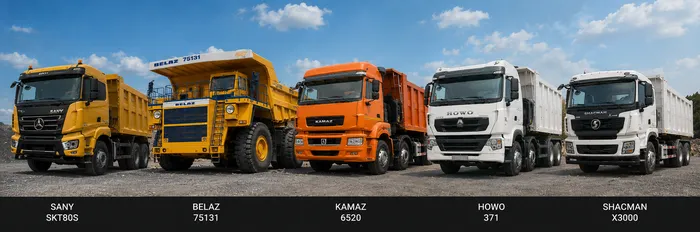

HD Dump Truck Parts
SANY · BELAZ · KAMAZ · HOWO · SHACMAN
| Part | Aplikasi | Stok |
|---|---|---|
| Suspension Cylinder Seal Kit | SRT95C / BELAZ 75131 | READY |
| Brake Disc / Rotor Set | SANY / BELAZ Series | READY |
| Fuel Filter Set (Primary + Secondary) | Multi-unit | READY |
| Air Filter Element Set | Multi-unit | READY |
| Steering Cylinder Seal Kit | BELAZ / SANY | READY |
| Transmission Oil Filter | Multi-unit | READY |
| Drive Belt Set | KAMAZ / HOWO | READY |
| Hydraulic Return Filter | Multi-unit | ORDER |